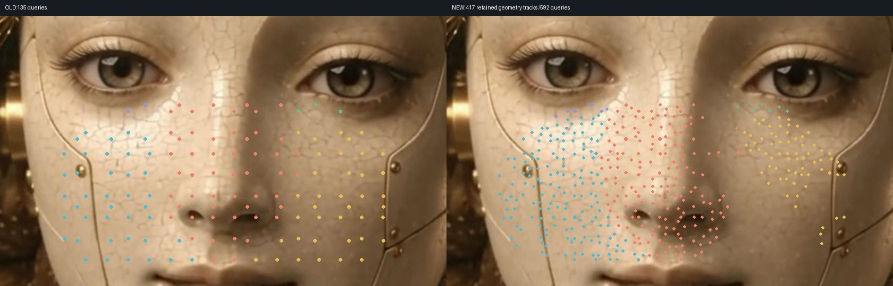
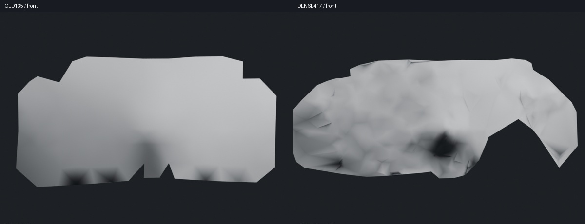
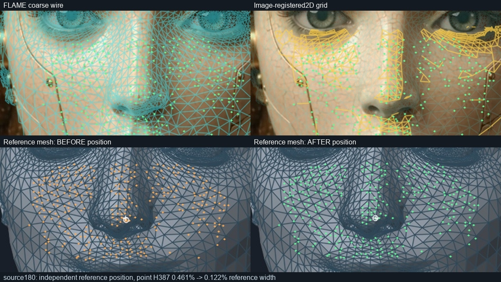
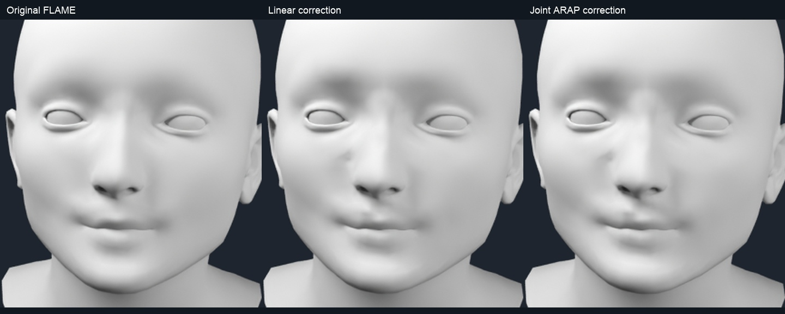
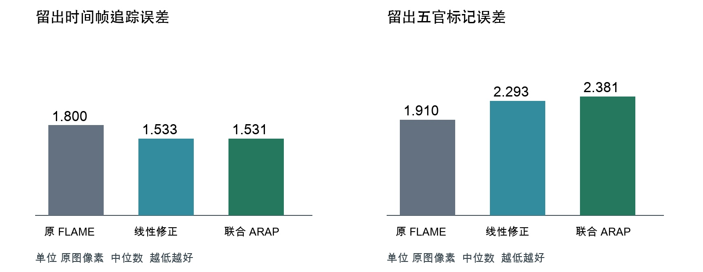
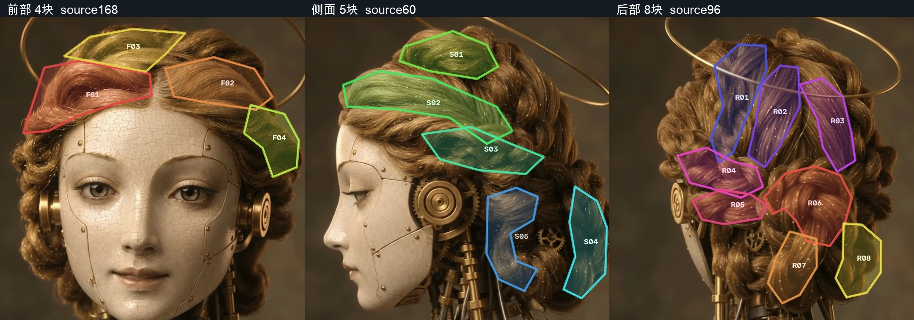
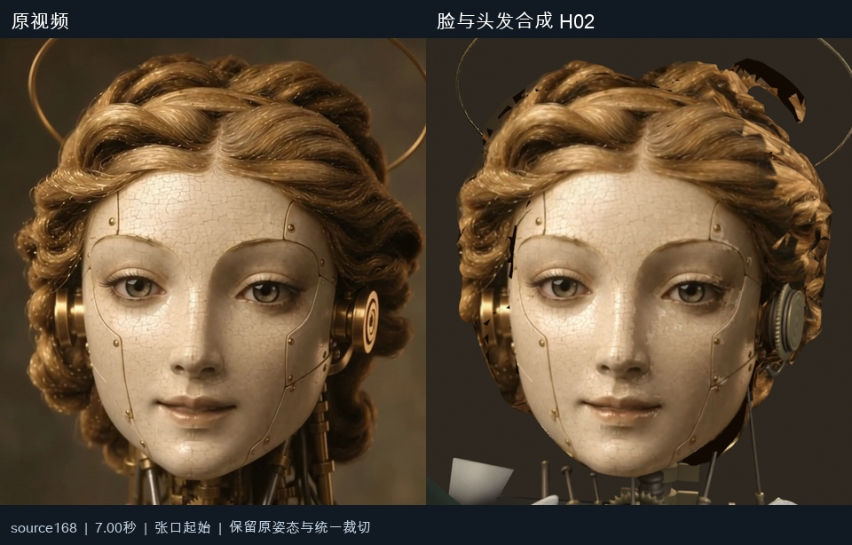
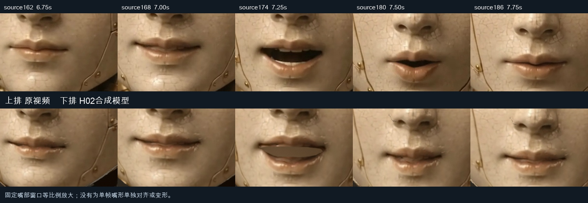
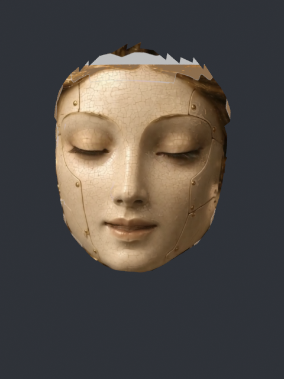
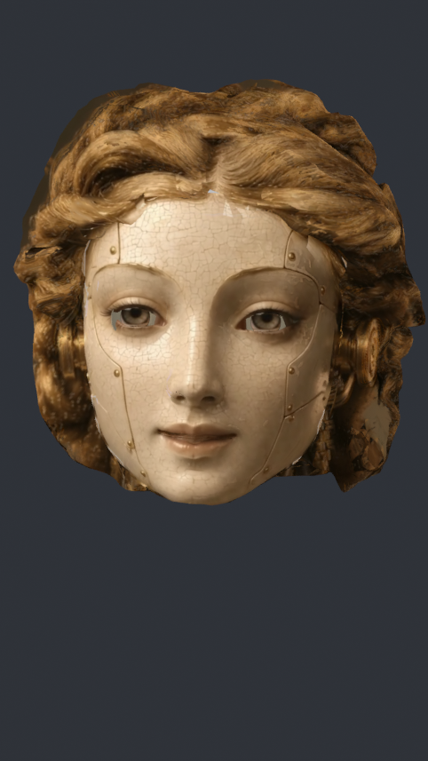

先看一组对比。
左边是一段 AI 生成的设计视频里的脸，右边是我们重建出来的头。同一张脸，但右边这个可以换机位、改灯光、动起来，还能继续被编辑。
听起来是个不错的成果。不过这份报告想说的重点不是"成了"，而是：这条路上一共有十二条路线，其中大部分被否决了，而最后交付的东西，能证明什么、不能证明什么，边界在哪里。
▲ ■ ●
一、AI 视频不是资产
素材是一段 10 秒的设计视频：720×1280、24 fps、240 帧。
它的画面极具辨识度——开片釉的瓷面、金色发束、机械耳饰。但把它当作三维资产来用，会立刻撞上三堵墙。

三视角
原视频的正、侧、后三个视角。AI 生成的局部变化，可能同时包含形变、反射变化和跨视角不一致。
第一，没有多视图几何约束。 每一帧都好看，但帧与帧之间不是同一个三维物体的投影。同一个鼻尖在正脸和侧脸里可能根本不是同一个点。
第二，不可编辑。 想换个机位，只能重新生成，得不到"转过去看看"。
第三，不可动画。 没有拓扑，就没有骨骼、没有表情键、没有蒙皮。
所以问题的定义不是"生成一张更好看的图"，而是：怎样让一张 AI 画出来的脸，变成一份可编辑、可动画、并且可以被验证的三维资产。
▲ ■ ●
二、三条原则
整条技术路线建立在三个判断上。
分块，而不是整体。 把脸拆成鼻部、左右脸颊、两块鼻侧过渡；把头发拆成 17 个发束分区。每一块单独重建，各自争取高保真。
局部用欧氏，全局用小形变。 局部块内部可以近似刚性——它本来就是一小片几乎不变的表面，用 SfM 建出来即可；块与块之间用 ARAP（尽可能刚性）做小幅协调，只允许小形变，不允许大拉伸。
几何与纹理分开判断。 贴图能把任何几何包装得很好看，所以每个结论都必须落到灰模上复核。
这三条原则听起来很朴素，但后面所有的失败，几乎都发生在它们的边界上。
▲ ■ ●
三、十二条路线，四组取舍
这一轮试过的方法，大致可以归成四类。
看到这张表，大概能理解为什么最后交付的是一个"混合体"：没有哪一条路线单独成立，每一块用的都是各自最不吃亏的方法。
▲ ■ ●
四、神经场：像，但软

MonoNPHM
MonoNPHM 的实际输出：原图、网格顶点颜色与灰模。自然人头先验对金属面部、卷发和眼周结构的表达偏差明显。
神经场路线的问题不在"不像"，而在"不硬"。
体渲染出来的画面很柔和，轮廓也能拟合。但只要你想把它提取成网格，问题就来了：质量取决于密度阈值，提取出来的表面容易糊成一片。
而这张脸的设计特征恰恰在硬边上——瓷面的开片纹、机械耳饰的圆柱、发束的棱。柔和的重建，等于把这些特征全磨掉了。
▲ ■ ●
五、蒸馏成闭合网格：模糊会被继承

蒸馏
上排是固定标准辐射场的虚拟视图，下排是从它蒸馏出的闭合网格。四个相机视角没有进入拟合。
把神经场蒸馏成一个闭合网格，是个很自然的想法：拿到连续表面，就能进入传统管线。
但蒸馏继承的是教师的模糊。单表面也很难表达"这里有体积""这里有两层遮蔽"这类信息——它只能给你一张皮。
这一步得到的结论不是"没用"，而是：它适合作为支架，不适合作为终点。 后来的 FLAME 拟合也是同样的角色。
▲ ■ ●
六、五块局部 SfM：加密不等于更准

五块
鼻部、左右脸颊与两块鼻侧过渡，通过同一套全局 track ID 建立重叠关系，再各自估计局部相机与三维点。
把脸拆成五块重叠区域，每块独立做 SfM，再用共享 track ID 同步尺度、以 ARAP 拼接。
第一轮得到 135 个唯一点、235 个三角形。加密之后是 417 个点、788 个三角形。
直觉上，点越多越准。实际结果相反：
五个区域里，四个变差。

135 vs 417
同相机灰模：左 135 点，右 417 点。加密带来了起伏、凹坑和缺口。
原因并不神秘：点变密之后，像素级的跟踪噪声也被一起放大；缺口代表的不是"真实的鼻孔"，而是"这里没有可靠支持"。
两轮 ARAP 的接缝间距下降了 93.5% 和 94.5%——拼接做得很干净，但拼得干净，不等于拼得对。
▲ ■ ●
七、从滑动到配准，再到 61 个固定目标
真正的转折点，是放弃"让 FLAME 自己变形"，改成"在 FLAME 上做修正"。

配准
先用 FLAME 做透视粗 warp，再求局部残余位移。这一阶段只更新二维定位，不改三维几何。
思路是：FLAME 提供 5023 顶点、9976 三角形的稳定拓扑，以及姿态表情的支架；它表面会"滑"，那就用图像配准把它按住；按住之后，再求解一组共享的顶点修正。
具体做法是：先从 23369 条拟合帧轨迹里筛出条件三维候选，最终固定 61 个目标点；其余顶点靠 ARAP 传递，远离观测的顶点和保护区保持原形。

ARAP
原 FLAME、线性修正、联合 ARAP。同一相机、同一光照。
结果如下。
留出时间帧的中位误差下降 14.9%。但请注意两件事。
第一，ARAP 的边际贡献很小。 相对线性修正，只是从 1.533 降到 1.531。数据不足以把收益单独归功于 ARAP，要证明它，需要控制变量相同的消融实验。
第二，五官标记退步了 24.6%。 这些点没有参与拟合，它们的退步说明：局部数据与原五官的对齐之间存在冲突。这不是可以抹掉的噪声。

误差
原图像素尺度的中位误差。追踪变好，五官变差——这就是这次交付里最诚实的取舍。
最终 786 个顶点发生了可测位移，跨 156 个姿态的边长相对变化 p99 约 11.4%。这是形变强度的诊断，不是误差上界。
▲ ■ ●
八、纹理与几何要分开判断

纹理
原视频、更新后的网格与轨迹、更新后的纹理。未观察区域保持中性灰。
纹理的做法是逐三角形选源：在配准场里为每个三角形找可靠、朝向合适、清晰的原始像素，先在片内保留高频细节，再在窄边带和共享顶点上约束颜色。
这样做的效果很直接——瓷面的开片纹、发束的高光、釉面的细碎反光都留住了。
代价是：有些区域根本没有源。 1708 片配准选源、1914 片参考外观，还有 6354 片落在未观察区域，只能保持灰色。
灰色不是偷懒，是诚实地承认"这里没有证据"。
▲ ■ ●
九、头发：17 个分区

头发分区
17 个发束分区，依次为前部、侧面与后脑勺。每块使用适合该区域的参考帧。
头发的策略和脸一致：分区、局部重建、刚性拼合。
17 块、3783 个点、27 帧纹理。每块用最适合它的参考帧，避免跨视角拉伸。

后脑对比
原视频、此前的程序化头发、局部 SfM 加 ARAP 加视频纹理。
结果是：发束方向、色彩和高频细节都明显更接近原设计，辫结的走向也对上了。
但几何仍是比较粗的外包络——沟槽有变化，可纹理里的细发丝并没有变成几何曲线。头顶的尖片、辫结的开口、部分接缝，仍然肉眼可见。
外观收益和几何收益，必须分开评估。 这是这份报告反复强调的一点。
▲ ■ ●
十、合成之后，还剩什么

合成
左侧原视频，右侧 H02 合成头部。面部裂纹、五官特征与金色发束更接近设计。
脸和头发合成 H02 之后，同一套头部 rig 下做了 240 帧核对，最大相机坐标差约 5.96×10⁻⁸ 模型单位——装配是紧的。
嘴部能张合，闭眼有响应：

说话序列
source162 到 186 的固定嘴部窗口，上排原视频，下排 H02，同一切片同一放大比例。
但张口幅度、唇缘、口腔内部仍有差异；眼睑与睫毛也没有完全对上。
所以现在的状态是：脸与头发外壳的局部重建、外观更新、组件合成与逐帧核对已经完成；逐根发丝、辫结内部连接、以及面向具体引擎的绑定与验收，还没做。
▲ ■ ●
十一、这份报告能证明什么
这是全文最重要的一节。
能说明的：
- 受约束的局部修正，能改善追踪一致性（留出时间帧 −14.9%）；
- 逐三角形纹理选源，能在保持局部清晰度的同时处理接缝；
- 分区重建能让发束外观显著接近原设计；
- 组件合成在 240 帧范围内是稳定的。
不能说明的：
- 收益不能单独归因于 ARAP，缺同条件的消融；
- 五官标记点退步 24.6%，提示局部数据与原五官对齐有冲突；
- 训练与留出共享同一段视频、同一个粗模型，只是内部泛化检查，没有物理尺度，也没有独立三维扫描；
- 边长变化 11.4% 是形变诊断，不是误差上界；
- 未发现法线反向，不等于证明全局无自交。
最后一条尤其值得强调。整份报告里，凡是"检查通过"的地方，都紧跟一句"它不能证明什么"。
这不是谨慎的修辞，而是这类工作唯一可信的写法：当你只能通过图像去推断三维时，任何"看起来对"都必须换算成可复核的量，再明确它覆盖不到哪里。
▲ ■ ●
十二、11 月 15 日之后：四次更新
前面写的都是 11 月 14 日的状态。之后又有四轮推进，结论同样需要说清楚。
第一，100 个控制节点加 profile 约束。
把控制点从 48 个扩到 100 个（固定 ID 0–99），再从 57 个真实侧转帧里提取 306 条轮廓法线约束。轮廓点允许沿切线滑动，不能当固定材料点用。
同一追踪集合上的未加权 2D 中位误差从 0.379 降到 0.362 px。但 profile 也带来了额外的时间抖动：3D 二阶差分中位数从 0.00002559 升到 0.00004903 head_width。定位更准了，稳定性略降，这是同一枚硬币的两面。
第二，纹理验证：表情没恢复，不是贴图的问题。
用最新几何配固定 2K 纹理，按同一源帧、同一相机渲完 240 帧后，做了一次直接测量：
- 源 174 帧的唇间距：原片约 35.6 px，模型约 0.7 px；
- 源 198 帧的左眼开合：原片约 6.1 px，模型约 30.5 px。
差距在几何投影里就能看到，所以结论很明确：当前几何没有恢复这两个表情，不能把责任推给贴图。 稀疏目标子集的低残差，不代表完整表情被重建了。
第三，局部 Rig：把眼睛和嘴真正做出来。
保留 100 节点的全局结构，用显式的唇部、眼睑观测去拟合局部表情；替换掉两片旧的眼球帽，改成两个独立球体，补上眼睑厚度边缘、口腔内壁，以及 8 颗上牙、6 颗下牙。
这一版第 174 帧的唇间距是 34.7 px（原片约 35.6 px，上一版 0.7 px）。同时给了独立转眼、眨眼/睁大、下颌与下唇联动、唇部开合、嘴宽、噘嘴与双侧微笑。
但要说清楚：眼球、眼睑壳、牙齿、口腔内壁都是建模先验，不是单目深度测出来的；眼缝与眼球的遮挡关系还得靠目视检查。
第四，11 月 16 日：把最新的东西合到一起。
当前展示模型已经是「r01 眼/嘴/下颌局部 Rig + Stage20 的 150 节点头发形变 + Stage21 的固定 2K 头发纹理」。
头发这边：38198 条短跨度轨迹覆盖 240 帧，每帧至少 1807 条活跃轨迹；平滑后加权像素拟合统计 2.7898、中位 2.2878 px。这是头发观测集内部的拟合统计，不是独立三维误差，也不能拿去和脸部的 0.147 px 相比。
贴图融合了 66 帧，记录的 UV 覆盖率为 54.0%。剩下的 46% 没有观测，不能宣称已真实恢复。
最后是 Three.js：可以旋转、逐帧播放、手动控制嘴型与下颌、左右分别眨眼与转眼，能切换网格/骨架、正侧后视角。GLB 保留了独立眼球骨架与手动形变目标，但原片那 240 帧的形变是以量化几何缓存播放的——不能说成 GLB 里已经含标准骨骼动画。
仍然没解决的：发际线接缝、额头纹理拉伸、眼睑 UV、注视方向、牙齿细节、发束镂空。也没有验证到生产级游戏资产的标准。
▲ ■ ●
十三、11 月 16 日晚：r02 与发际线
最后一轮是两件事：把眼嘴结构做成 r02，再回头修发际线那道缝。
r02：牙齿、舌头、两只独立眼球。

r02 眨眼
r02 的闭眼姿态。这一版替换了眼球与眼睑结构，并补上了口腔内部。
这一版的脸有 9932 个顶点、11427 个三角。相对 r01，新增了 28 颗牙、两组独立眼球装配、一条舌头，下颌以 0.3 弧度开合。
原生校验的数字很硬：
- 中性基差异 3.57e-7；
- 唇封（下颌 0.08 张开、0.35 闭合）误差 3.64e-7；
- 下齿刚性距离误差 1.49e-7，实际运动量 0.1475；
- 共享注视目标的运动量 0.0330；
- 240 帧视频回放最大误差 3.58e-7；
- 全流程没有逐帧 Python 回调，源文件保持不变。
这些数字说明的是文件内部的几何与驱动是自洽的，不是"看起来对"。但同一份 results 里也写着：眼球半径、下颌枢轴位置、牙齿与口腔深度都是解剖设计先验，这一轮没有新的单目度量深度结论。
发际线：删掉 48 个三角。

发际线
修完之后的合成效果：额头那圈穿透头发的三角被削掉，切边塞进可见头发的下面。
做法很具体：把穿透出头发的 48 个额头三角删掉（11427 → 11379），涉及 232 个脸部顶点、622 个头发顶点；局部做 Taubin 平滑，把切边塞进可见头发下面，刘海区做有界平滑。
- 脸的最大位移 0.0533，头发 0.004；
- 参考相机下的脸部深度变化 4.3e-18，等于没动；
- 贴图只用 6 个视角（168、0、28、48、134、198），按可见性择优投影进既有 UV，脸材质改了 369,430 个 UV 像素，支撑样本 457,232，其中 369,431 有观测；
- 导出最大误差 2.38e-7，240 帧 24 fps，打包 3 张贴图，仍然没有 Python 回调。
一处需要说清楚的地方：这一版的合成渲染用的脸还是 r01，r02 的 rig 还没进入最终渲染链路。也就是说，图里看到的眼嘴结构是 r01，r02 目前只在独立校验里通过了。
▲ ■ ●
十四、R04：把交界那道缝补成一张连续的面
r02 解决的是"能不能动"，R04 解决的是"动的时候接缝露不露"。
绑定不断开，并不等于交界好看。R03 已经让脸和头发共用同一个头部父节点，转头时不会分离；但补面是按边独立生成的，还往头部中心收缩得过深，一转头就露出被拉长的折片。侧面纹理里也有灰白 UV 填色、投影拉伸，耳周缺一块能承接的机械结构。
先换网格。 用 13 排、1066 顶点、1584 三角形的连续过渡面替换旧补面，相邻条带共享顶点。脸端固定到原脸边界、保留表情传递；发端取邻近头发材料点的平滑插值、藏进外壳；内收幅度上限 0.018 模型单位，避免深折回头内。
再补耳盘。 可见侧机械耳的中心由原片第 0、48、168 帧的二维位置加现有相机估计，再用参数化同心环浮雕构造。这三个观测上的重投影误差约 4.9–5.3 px——这是内部拟合残差，不是独立精度。另一侧只做对称造型，用两个弱可见边缘观测修正位置，不对称细节不宣称已重建。
最后重烘焙纹理。 取源帧 0、24、48、134、156、168、220，按法线朝向与合并深度遮挡选图，只重烘焙太阳穴与边界窄带，保留额头中央已有的专用 UV 岛。空白 UV 由邻近有效颜色延伸，端点颜色在窄带内羽化，曝光差做有限低频协调。过渡 UV 图约 26.0% 有直接图像采样，其余靠邻接材质插值——这个数字包含隐藏与未参与显示的 UV，不能当作可见接缝的覆盖率。
验算。 240 帧里，脸端接触误差为 0，发根附着最大误差 4.77e-7，发端插值最大误差 2.62e-6，手动下颌时脸端误差 2.38e-7；额外做了一段固定中性表情、真实旋转头部父节点 ±55° 的转头检查，共同运动误差 4.77e-7。
这些残差都是模型坐标单位，验证的是附着与共同运动，不是独立三维精度。
R04 之后，发束体积、局部纹理、眼嘴表情与原片的差异依然在。
▲ ■ ●
复现索引
报告与素材已公开：symint.ai/riemann-report
代码与配置位于项目的 code/ 与 qa/ 目录；原角色主文件与原始 FLAME 文件的 SHA 在全程保持不变。
本文为项目技术报告的公众号版，图表均来自实际输出。流程示意图不作为实验结果；文中所有误差为原图像素尺度或模型单位，不可直接换算为物理尺寸。